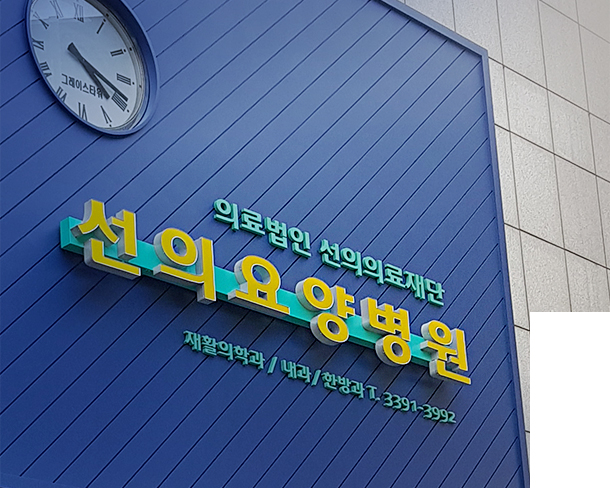
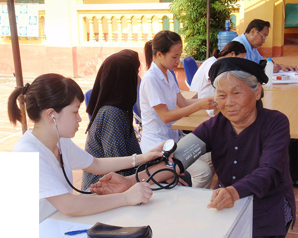

의료법인 선의의료재단은 국내 외 어려운 이웃들과 의료복지를 통해 삶을 나누어 가려고 합니다.
1982년부터 지금까지 36년이라는 긴 세월동안 ‘생명을 살리고 영혼을 살리는 일’이라는 미션을 가지고 국내 외에서 의료 복지사업들을 진행해왔습니다.

보건과 복지에 전문성을 갖춘 요양병원 건립
우리나라는 전 세계에 유래가 없을 정도로 가장 빠르게 고령화 사회로 진입해가고 있는
나라입니다. 선의의료재단은 이러한 시대의 흐름에서 발맞추기 위해 2005년 선의요양병원을
건립하여 지난 십 수년간 지역사회의 어르신들을 위해 최고의 의료서비스와 봉사정신을 갖춘
전문재활요양기관을 건립하였습니다.
뿐만 아니라 선의요양병원은 지난 36년동안의 복지재단 및 복지시설 운영의 노하우를 바탕으로
요양병원으로서 보건분야의 전문성 뿐만 아니라 어르신들의 행복한 삶을 가장 최 우선으로
생각하며 운영하고 있고 더 나아가 지역사회와 소통하는 의료재단으로서 지역주민들의
삶의 질을 높이기에 앞장 서고 있습니다.

국내 외 다양한 의료복지사업을 통한 사회공헌사업을 전개
국내를 넘어 해외에서도 선의를 전달하고 있는 선의의료재단은 2001년부터 선천성 심장병 어린이
무료수술초청사업을 시작으로 필리핀, 베트남, 라오스, 캄보디아, 미얀마 등 370여명의 아이들이
생명을 살리고 고국으로 돌아갔으며, 2005년부터는 베트남 하노이 썩선 지역에 선의적십자병원을
건립하여 무료 의료서비스를 진행하였고, 이동진료차량을 통해 베트남 오지 산간에 거주하는
의료의 사각지대에 놓여있는 주민들을 찾아가 의료서비스를 진행하는 등 지난 국내 외 다양한
의료복지사업을 통한 사회공헌사업을 전개 해 왔습니다.
선의의료재단은 작지만 꾸준히 그리고 더욱 겸손한 자세와 사랑의 마음으로 어려운 이웃을 위하여 사랑과 희망의 빛을 비추어 나가겠습니다. 감사합니다.